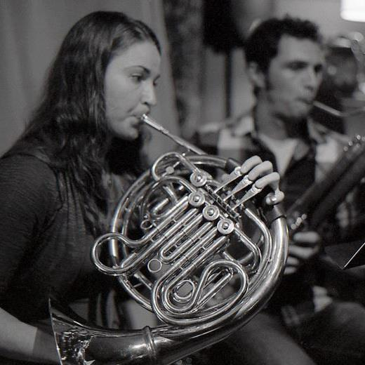
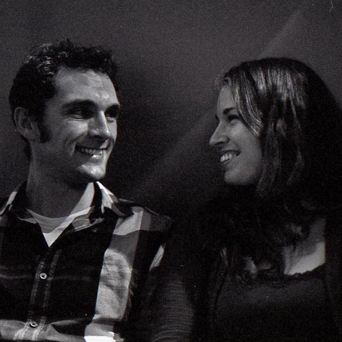
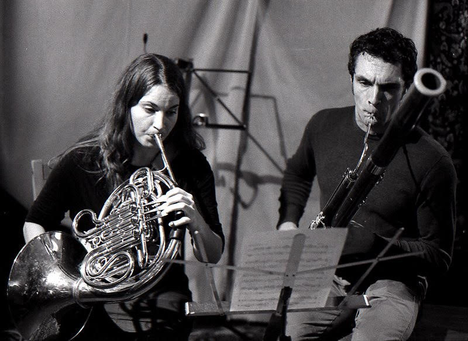

Our music
Swantissimo brings together two of the orchestra’s most distinctive voices in an intimate chamber setting unlike any other: the warm, resonant horn and the rich, woody bassoon.
Drawing from centuries of classical repertoire as well as newly commissioned and arranged works, Swantissimo presents duets written and adapted expressly for their unique combination of instruments. From baroque elegance to romantic expressiveness to contemporary color, their programs reveal how much beauty lives in unexpected pairings.
Whether performing original transcriptions of beloved masterworks or world premieres written just for them, Swantissimo invites audiences to hear both instruments, and music itself, in a fresh, captivating light.
A musical partnership rooted in love, adventure, and a shared passion for the outdoors.
A classically trained hornist holding a Master of Music in Horn Performance from the University of Oregon, she brings both technical mastery and expressive depth to every performance. Her playing is shaped by over 20 years of orchestral and chamber experience, and by an adventurous spirit that carries over into every aspect of life.
Hailing from Klamath Falls, Oregon, he is a prize-winning bassoonist who took first place in both the Youth Symphony of Southern Oregon (YSSO) Concerto Competition and the Oregon State Solo Music Competition in 2002. He went on to study at the prestigious San Francisco Conservatory of Music, refining his artistry under world-class instruction.

They met through music and never looked back. Married and as adventurous off-stage as they are on it, they are active members of the Rogue Valley Hang Gliding and Paragliding Association (RVHPA), chasing thermals and big sky views across Southern Oregon. They are also dedicated aikidoka, committed practitioners of the Japanese martial art of aikido, whose philosophy of harmony and flowing movement mirrors their musical sensibility.
Whether soaring above the Rogue Valley, training on the mat, or rehearsing a new arrangement, Swantissimo live by a simple belief: beauty is found when different things come together.
Hire the duo
A horn and bassoon duo is elegant, portable, and wonderfully unexpected. Swantissimo is available for:

Interested in booking Swantissimo for a concert, event, or collaboration? Follow along on Instagram or reach out directly. We’d love to hear from you.